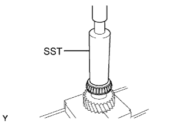

ВЫХОДНОЙ ВАЛ > ПОВТОРНАЯ СБОРКА |
| 1. INSTALL OUTPUT SHAFT REAR BEARING |
|  |
Using SST and a press, install a new output shaft rear bearing to the output shaft.
Apply a light coat of MP grease to the bearing.
| 2. INSTALL OUTPUT SHAFT CENTER BEARING |
Apply gear grease to the output shaft center bearing and install it to the output shaft.
| 3. INSTALL NO. 3 SYNCHRONIZER RING |
Apply gear oil to the No. 3 synchronizer ring and install it to the output shaft.